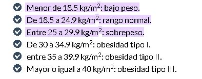
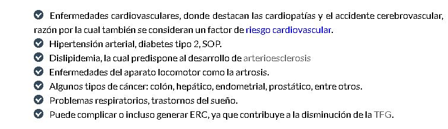

El IMC es una métrica utilizada para calcular un estimado de la grasa corporal.
Puedes calcularlo fácilmente aquí. La ecuación es: IMC = peso (kg) / altura2
Dado que el manejo del peso generalmente es un componente importante del manejo de la diabetes, saber cuál es tu cantidad de grasa corporal a través de la lente del IMC puede ser una clave importante para saber cómo está tu salud en general.
Es importante llamarlo por lo que es: una estimación. Medir la grasa corporal requiere una tecnología más sofisticada, un analizador de grasa corporal digital que puede ser costoso e inaccesible para muchos. El IMC, por lo tanto, se utiliza como sustituto.
¿POR QUE ES IMPORTANTE CONOCER NUESTRO INDICE DE MASA CORPORAL?
Cada vez nos preocupa más lo que comemos. Vivimos en una sociedad que está empezando a tomar conciencia sobre la necesidad de tener una dieta variada y equilibrada o, lo que es lo mismo, saludable. En este escenario, con un porcentaje elevado de la población con sobrepeso se vuelve más importante, si cabe, conocer nuestro índice de masa corporal (IMC). Es una medición muy sencilla que nos permite conocer cuál es nuestro peso ideal. También puede ser una medida relevante para alertar sobre otro tipo de problemas u enfermedades. Por ello, los endocrinos y nutricionistas deben de conocer este valor antes de apostar por una determinada dieta o tratamiento
¿COMO SE CALCULA EL IMC?
Calcular tu IMC es mucho más sencillo de lo que parece sólo debes dividir tu peso actual entre tu altura en metros cuadrados. Te saldrá un valor que, evidentemente, por sí sólo no sabrás interpretar. Lo que tienes que saber es que si esa cifra se encuentra entre los 18,5 y los 25 tienes un peso normal, entre el 25 y el 30 padeces sobrepeso y, a partir de este indicador se cataloga un problema de obesidad. Igualmente que nos preocupa estar por encima de nuestro peso normal, es necesario saber que por debajo de 18,5 también debemos alarmarnos por un peso bajo. Sin embargo, no debes tomar ninguna decisión, antes de nada debes ponerte en manos de un especialista que pueda asesorarte sobre el mejor modo de llevar a cabo una dieta adecuada
¿Cuales son las tendencias y valores para adultos?
El IMC en adultos de 20 años en adelante utiliza los siguientes rangos de peso estándar, los cuales son los mismos tanto para mujeres como para varones de cualquier edad y contextura corporal:

¿problemas para adultos?

¿Cuales son las tendencias y valores para niños y adolescentes. Como se realizan estos cálculos??
Para los niños y adolescentes, el IMC es específico con respecto a la edad y el sexo, y con frecuencia se conoce como el IMC por edad. En los niños, una gran cantidad de grasa corporal puede provocar enfermedades relacionadas con el peso y otros problemas de salud. Tener bajo peso también puede poner a uno en riesgo de problemas de salud.